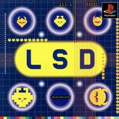

LSD - Dream Emulator

LSD: Dream Emulator é um jogo de exploração e aventura de 1996 da Asmik Ace Entertainment, lançado para PlayStation. Em LSD, o jogador explora ambientes surreais sem qualquer objetivo. Se tocar em qualquer coisa no ambiente, como paredes, criaturas ou objetos, será transportado para outro cenário. O jogo foi concebido pelo artista japonês Osamu Sato, que rejeitou a ideia de jogos e queria usar o PlayStation como meio para criar arte contemporânea. O conceito do jogo é baseado em um diário de sonhos mantido por Sato durante mais de uma década.